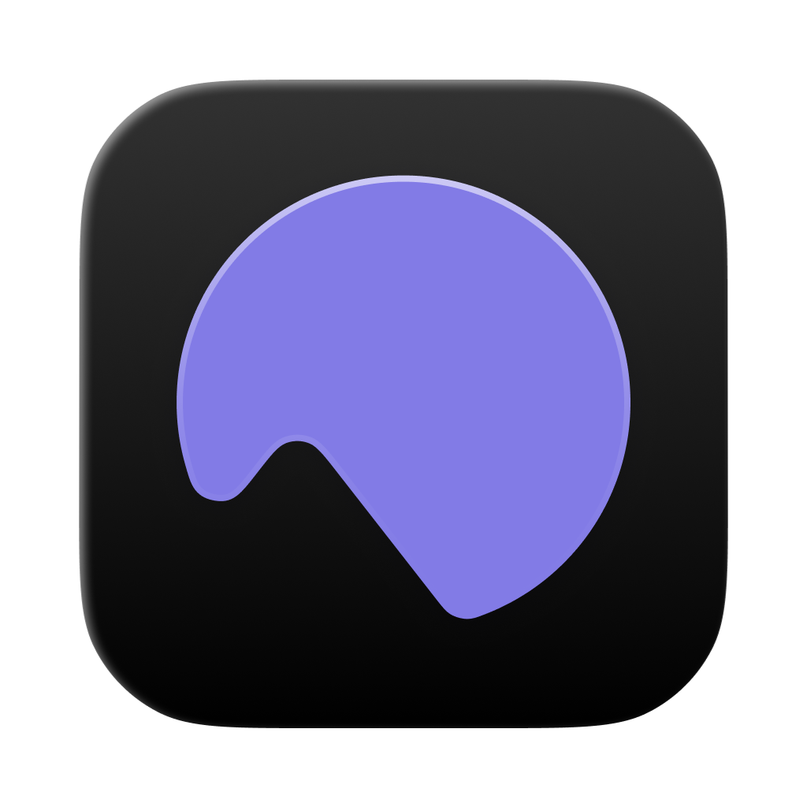
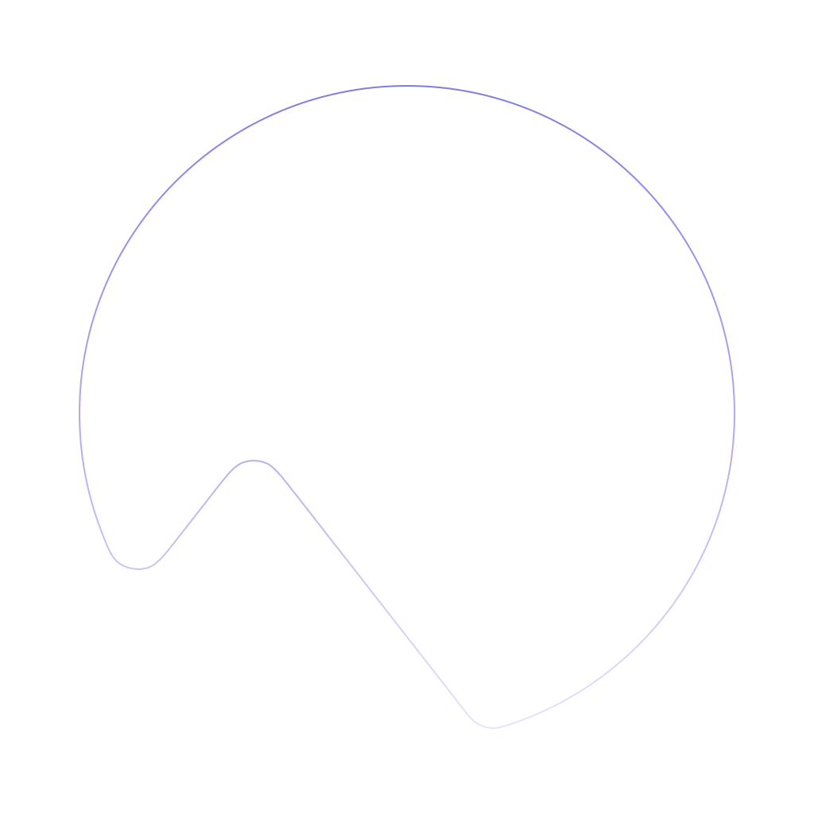

Find the launch checklist in screen memory.

Cetus
An always-on home for your agents.
For the work happening all around you. Bring the agents you already trust into your day — with context, continuity, and a shortcut to get started.

Point me at something.
Let's get into it. Press / to focus.
Searched meeting history Launch planning
FinishedExample conversation
Searched screen historyToday · Browser
FinishedExample conversation
Scheduled run completedWeekdays · 9:00 AM
FinishedExample conversation
Ask a follow-up…
Review requested
Ready for your review before publishing.
Decisions and next steps from today’s meeting.
Your daily priorities are ready.
Automations
Schedule prompts to run automatically.
Morning briefing
Summarize my meetings and priorities for the day.
12 runs · Last run 2h ago
Weekly project review
Review this week’s progress and draft next steps.
12 runs · Last run 2h ago
Example automation added. Changes stay in this preview.
Summarize this page and pull out the next steps.
Product planning · Browser Screen context
⌘ + ⌘ Always within reach.
Interactive preview · Example content
The thesis:
Great agents need
more than intelligence.
They need context, a way to act, and memory that carries experience forward.
Cetus begins with a simple belief. As intelligence becomes more capable, the environment around it matters more. The desktop is where our intentions, conversations, and unfinished work already meet.
One person.
Several kinds of intelligence.
We build for people who use several agents together. Codex for one task, Claude Code for another, a different runtime for a second opinion. Each brings its own strengths, tools, and ways of working.
A personal assistant should leave that choice open. Choose the runtime for the task while keeping the surrounding work — projects, schedules, and results to review — in one place.
Your accounts.
Your tokens. Your choice.
You already have a relationship with your model providers: API keys, CLI logins, preferred models, and a token budget you decide how to spend. That should be the starting point.
Cetus is designed around using those existing accounts and runtimes. Intelligence stays with the provider you choose; the assistant layer makes it useful across your desktop.
An agent is a loop.
Give it a world to work in.
Context gives intelligence something meaningful to reason about. Tools turn that reasoning into action. Reflection brings the outcome back into the next decision. Over time, useful experience should accumulate.
Quick Launcher makes this loop reachable. The distance between having an intention and involving your agent should be a gesture, wherever you happen to be working.
Context
The environment becomes available to the agent through your voice, meeting transcripts, selected text, and opt-in screen memory. You decide what enters the conversation.
Reasoning
Each provider’s runtime brings its own intelligence, models, and tools. Cetus gives that runtime a place in your day and leaves its capabilities intact.
Action
Runtime tools do the work. Automations give it a schedule. Conversations and the board make progress, results, and requests for your judgment visible.
Reflection
Memory carries decisions forward. Dreaming consolidates experience into durable notes. Proposed Skills offer recurring workflows for you to review and enable.
The models will change.
Your context should compound.
Product planning
Launch / Planning
A little closer to launch.
Keep the work clear. Make the next step easy.
Product
Ready for reviewWebsite
In progress
Ready for reviewWebsite
In progress
Help me plan the next step.
Create more⌘+⌘
Your agent, right where you are.
Hold both Command keys to summon Cetus over any app. Ask when the thought arrives, without breaking your flow.
Your screen, selected text, and browser URL can come along as context. Keep what helps. Remove what doesn’t.
⌘+⌘
A little closer to your everyday work.
Useful desktop capabilities around the runtime you choose. Bring in context, make things happen, and keep the thread.
Notes
Thoughts for the launch
Make it easy to pick up where you left off.
Say what’s on your mind.
On-device dictation, wherever you type.
Screen history
product planning ⌘ K
Today 2 captures
Product planning · Launch
Next steps and priorities
Pick up the context.
Opt-in screen history, searchable by text and app.
Launch planning
Recording
00:12
YouLet’s finish the walkthrough today.
00:18
ThemI’ll review the screens and send notes.
00:26
YouGreat. I’ll prepare the next steps.
Microphone + system audio
Remember the conversation.
Turn meetings into searchable, on-device transcripts.
Automations
Morning briefing
Summarize my meetings and priorities.
12 runs · Last run 2h ago
Weekly project review
Leave a task for later.
One-off or recurring work, on your schedule.
Find the words.
Draft a reply from the conversation on screen.
Memory
Dreaming complete Just now
Project preferences
Keep summaries brief. Link to the source.
Proposed skill Review
Prepare a launch recap
A repeatable workflow from your recent work.
Carry experience forward.
Reflect on past work and keep useful notes.
Website polish
Polish the website and review the details.
Updated 3 files
The layout and interactions are ready for review.
website/index.html
website/styles.css
Finished
Ask a follow-up…
Codex
Room for every thread.
Keep conversations, workspaces, and the next thing to do close at hand. Give each task a place of its own.
Choose a workspace.
Keep each conversation grounded in the right project.
Keep the conversation.
Carry context and background terminals across replies.
Review what’s ready.
See which tasks are running, need review, or are done.
Explore another approach.
Run parallel solutions and keep the one that works.
A shorter way into your flow.
Reach your assistant, speak a thought, or find the right reply — from the app you’re already in.
Product planning
Launch / Planning
A little closer to launch.
Keep the work clear. Make the next step easy.
Product
Ready for reviewWebsite
In progress
Ready for reviewWebsite
In progress
Selected screen area
What should I change in this screen?
Create more⌥+⌥Quick launch + screenshot
Quick Launcher
Hold both Command keys to summon your agent.
Quick Launcher + screenshot
Hold both Option keys. Select an area, or click to capture the full screen.
Quick Reply
Double-tap right Option to draft from the conversation on screen.
Insert your draft
Put the reviewed reply into your input.
Try another runtime
Redraft the same screen in Quick Reply.
Keep the agents you already trust.
Your preferred runtime, models, and tools. A consistent desktop home around them.
CodexNew task
Review the changes and help me ship.
Read workspace context
I’ll check the implementation, run the relevant checks, and summarize anything that needs your attention.
Check completed
All checks passed.Ready for review
Ask a follow-up…
cetusCodex
Make room for Cetus.
Open source. Built for your Mac. Ready for your next idea.
Download for Mac Apple SiliconmacOS 13 or later. Your chosen model provider’s usage charges may apply.